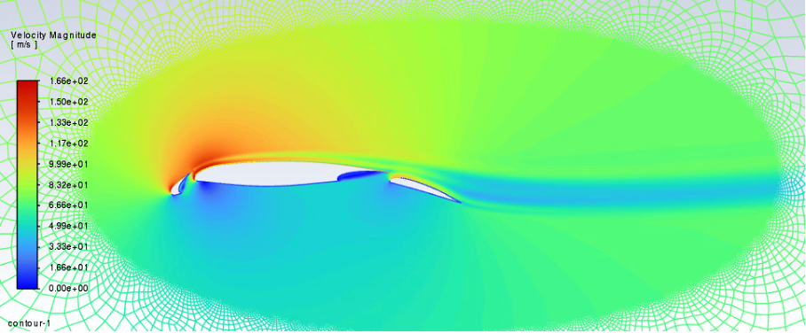
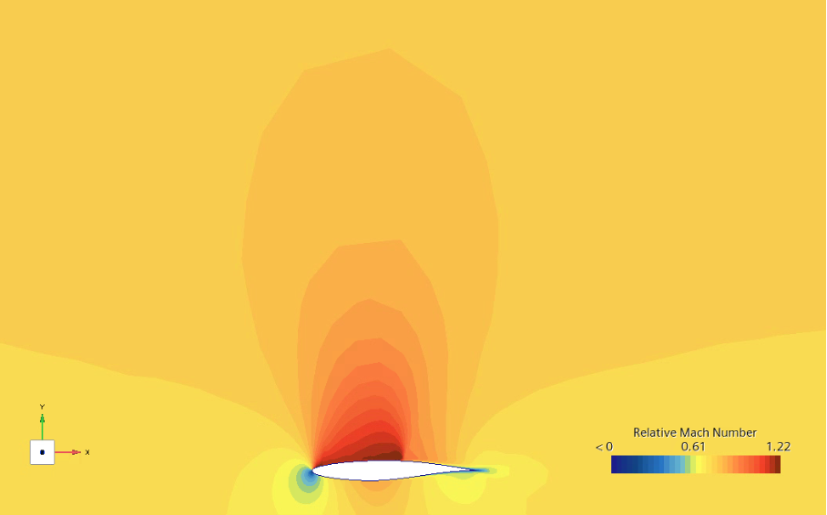
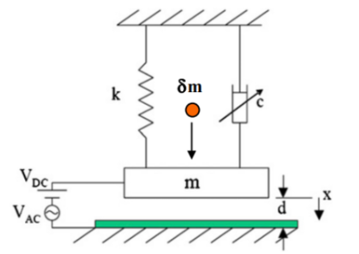
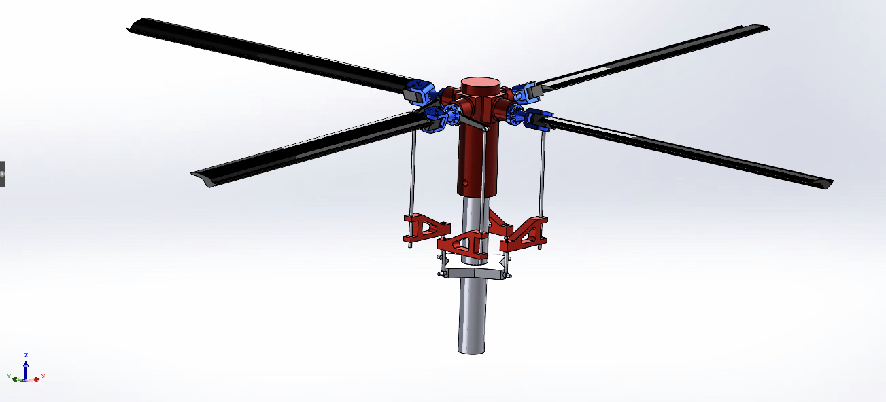

CFD Landing configuration · ANSYS Fluent.

Shock wave formation & Cp analysis · STAR-CCM+.

Mass sensing via frequency shift & amplitude jump · Python (NumPy / SciPy).

Full mechanical design & kinematics · SolidWorks.